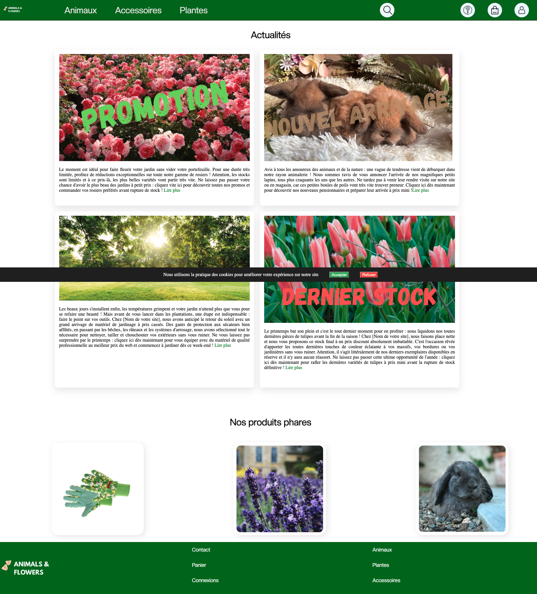

Animals and Flowers
Dans le cadre de ma formation en première année, j'ai réalisé en binôme le projet Animals and Flowers, un site e-commerce inspiré des grandes enseignes de jardinage et d'animalerie (type Jardiland). L'objectif principal était de concevoir une plateforme attrayante, ergonomique et interactive.
Pour la partie Front-end, nous avons conçu l'interface en HTML5 et CSS3. Afin d'offrir une expérience utilisateur dynamique, nous avons développé plusieurs fonctionnalités en JavaScript, notamment la mise en place d'une barre de recherche dynamique et d'interactivités sur les boutons de l'interface.
En parallèle, nous avons travaillé sur l'architecture des données (Back-end) en modélisant la structure via un MLD en SQL, puis en créant la base de données en PHP/MySQL pour poser les bases de la gestion de données du site.
Le principal défi de ce projet résidait dans sa contrainte temporelle : réalisé sur 3 semaines avec un volume d'heures encadrées très réduit, il a nécessité une excellente organisation en binôme, une simplification du visuelle du site et une grande efficacité technique pour être livré dans les temps.
Voir le projet